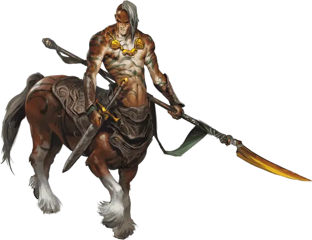

Кентавр
Centaur
Большой Монстр, нейтрально-добрый

Класс Доспеха 12
Хиты 45 (6к10 + 12)
Скорость 50 футов
| мод | спас | ||
|---|---|---|---|
| СИЛ | 18 | +4 | +4 |
| ЛОВ | 14 | +2 | +2 |
| ТЕЛ | 14 | +2 | +2 |
| мод | спас | ||
|---|---|---|---|
| ИНТ | 9 | −1 | −1 |
| МДР | 13 | +1 | +1 |
| ХАР | 11 | +0 | +0 |
Навыки Атлетика +6, Восприятие +3, Выживание +3
Чувства пассивное Восприятие 13
Языки Сильван, Эльфийский
Опасность 2 (450 опыта)
Бонус мастерства +2
Среда обитания Лес, Луг
Особенности
Атака в броске. Если кентавр переместится как минимум на 30 футов по прямой к цели, а затем в том же ходу попадет по ней атакой пикой, цель получает от атаки дополнительный колющий урон 10 (3к6).
Игровой персонаж. Кентавр может стать хорошим искателем приключений. Смотрите описание игровой расы Кентавр в этой статье.
Действия
Мультиатака. Кентавр совершает две атаки: одну пикой и одну копытами, либо две атаки длинным луком.
Пика. Рукопашная атака оружием: +6 к попаданию, досягаемость 10 футов, одна цель. Попадание: Колющий урон 9 (1к10 + 4).
Копыта. Рукопашная атака оружием: +6 к попаданию, досягаемость 5 футов, одна цель. Попадание: Дробящий урон 11 (2к6 + 4).
Длинный лук. Дальнобойная атака оружием: +4 к попаданию, дистанция 150/600 футов, одна цель. Попадание: Колющий урон 6 (1к8 + 2).
Описание
«Я СЛЫШАЛ, ИЗ КЕНТАВРОВ ПОЛУЧАЮТСЯ ОТЛИЧНЫЕ СКАКУНЫ!»
— БЭТЛИ ЛЕТНОНОГ, ПОЛУРОСЛИК ИСКАТЕЛЬ ПРИКЛЮЧЕНИЙ, НИКОГДА НЕ ЧИТАВШИЙ КОПЫТА ЯРОСТИ ИРВИЛА ГРЭЙБОРНА ИЗ СОЛНЕЧНЫХ УВАЛОВ
Кентавры, одинокие странники и чтецы предзнаменований природы, избегают конфликтов, но будучи загнанными в угол, сражаются с яростью. Они селятся на огромных пустошах, держась подальше от границ, законов и общества других существ.
Пустынные кочевники. Племена кентавров широко распространены в землях с климатом от мягкого до жаркого, где кентавру достаточно только легкого меха, либо промасленной кожи, чтобы бороться с превратностями погоды. Они охотники-собиратели, редко возводят жилища, и даже палатки.
Миграции кентавров покрывают целые континенты и длятся десятки лет, так что племя может не возвращаться на прежний путь несколько поколений. Такие далекие переселения могут привести к конфликтам с существами, которые могут возвести свои жилища на традиционных путях миграции кентавров.
Вынужденные поселенцы. Кентавр, который отстает от племени, остается позади. Некоторые из этих кентавров исчезают в дикой местности, и никто их больше не видит. Те, кто могут перенести потерю своего племени, селятся среди других рас. Пограничные поселения ценят знания своих сожителей кентавров. Многие из таких общин даже обязаны своим выживанием проницательности и сообразительности кентавров.
Несмотря на затворническую натуру, кентавры торгуют с эльфами и с караванами других дружественных гуманоидов, которых они встречают во время своих странствий. Торговец может спасти жизнь раненого или пожилого кентавра, неспособного для длительного путешествия, и сопроводить его в населенный пункт, где тот может спокойно прожить остаток своих дней.